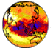

CIDC - Atmospheric Dynamics & Atmospheric
Sounding Products
CIDC - Atmospheric Dynamics & Atmospheric
Sounding Products
Contents:
DAO 4D Assimilation Atmospheric
Dynamics Monthly Mean Subset
This is a 26 parameter subset of the Data Assimilation Office's (DOA) monthly mean dataset. The DOA monthly
mean dataset, in turn, is based on the DOA's multi-year assimilation. Data Assimilation is the process of
ingesting observations (horizontal winds, temperatures, dew point temperatures, etc.) into a model of the
Earth system. The current product, GEOS-1, uses meteorological observations and an atmospheric model (Schubert et al., 1995). The
data is ingested at six hour intervals. The result is a comprehensive and dynamically consistent dataset,
which represents the best estimate of the state of the atmosphere at that time. The assimilation process
fills data voids with model predictions and provides a suite of data-constrained estimates of unobserved
quantities such as vertical motion, radiative fluxes, and precipitation.
This dataset provides global data determined on a 2.5° x 2° latitude-longitude grid for 26 fields.
Unlike most other data products, this data has been regridded to a 2° x 2° latitude-longitude grid. Five of these fields are given at
eight pressure levels, the rest are surface values, or vertical integrated values.
Documentation available on CD-ROM
The data is available on Volume 2 of the CIDC
CD set.
TOVS Atmospheric Soundings
This is an 11 parameter subset of the Sounder Research Team of the Laboratory for Atmospheres (NASA/Goddard
Space Flight Center) global monthly mean dataset. The TOVS (TIROS Operational Vertical Sounder) dataset is a
collection of monthly means during the years 1985 - 1992 that describe the thermodynamic
and radiative state of Earth's atmosphere, including global profiles of temperature and moisture, cloudiness,
and outgoing longwave radiation. It was generated from data obtained from the HIRS2 (High resolution
Infrared Radiation Sounder) and MSU (Microwave Sounding Unit) instruments that are part of the TOVS suite of
instruments flown on NOAA (National Oceanic and Atmospheric Administration) satellites NOAA-9, 10, 11, 12,
and 14. The fields are gridded on a 1° x 1° latitude-longitude grid. The monthly means are generated
from each satellite separately. TOVS-derived data provide a means to investigate long-term climate change
and interannual variability and study local and periodic phenomena such as El Niño and stratospheric
warmings.
Documentation available on CD-ROM
The data is available on Volume 4 of the CIDC
CD set.